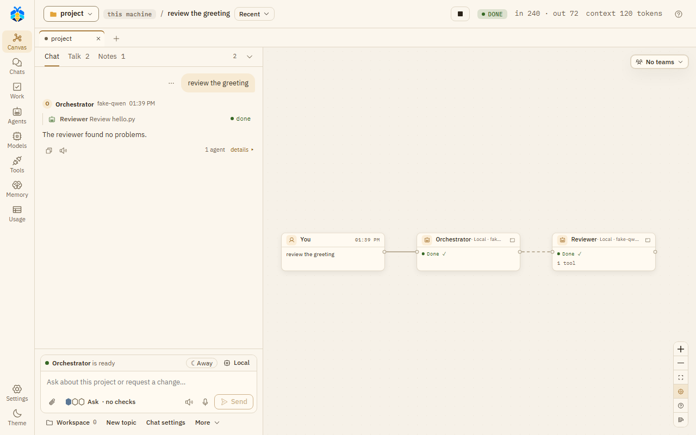
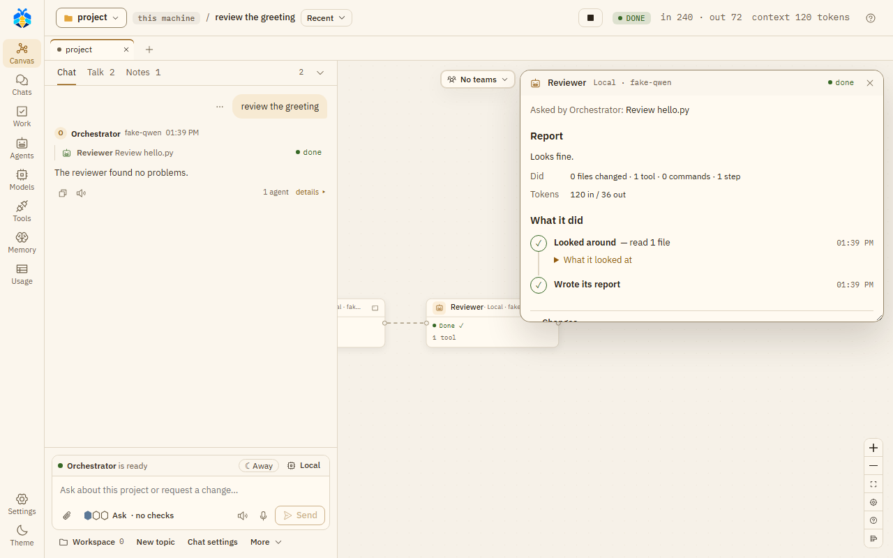

Chat and canvas¶
The chat is where you talk to the Orchestrator. The canvas behind it draws each turn from what was recorded: the agents, their tools, commands and the files they changed. Nothing on it is simulated.

A turn on the canvas, with the chat beside it.

A turn's life, from your message (and its plan, with Plan first) to the work in your folder, and the Scout after it.
The chat¶
Open, the chat is a column at the left of the canvas, as tall as it. Drag its right edge to make it wider or narrower (or focus the edge and use the arrow keys); the width is kept.
The chat panel has three tabs:
- Chat: "Your conversation with the Orchestrator".
- Talk: "What the agents say to each other, to hand work on or ask one another".
- Notes: "A shared notebook: you and the agents leave notes here, kept from message to message and given to new agents". In a To-do story's or task's turn, and a night's job's, a note for the whole turn also goes into that job's notebook.
Hide chat (or Esc) folds it to one line at the canvas's bottom left that says how many messages are unread and how many things wait for you.
Writing a message¶
- While agents work, Send becomes Send now (Enter): your message goes into the turn at work and the Orchestrator answers it in that turn. After this turn, beside it, queues it as before: it waits and runs after the current work. A queued message can be removed. See Talking while agents work. Stop, on the line over the message, stops the work. If KOLONİ restarts before a queued message runs, it stays in the chat as "Not sent: KOLONİ restarted", with Send to send it now.
- Stop everything, in the top bar on every page, stops every turn in every chat and holds what starts by itself: the To-do tasks waiting in a chat's queue, and work while you're away. It asks first, saying what runs and what will be held. Then the button reads Held · Resume; its panel lists the chats it stopped and what is held, with Resume. Your own messages still run while it holds.
- On Stop or Stop everything, an agent on a branch of its own keeps its work committed there, and a team's recipe keeps its copy for Take in, and so does a job while you're away (see Work while you're away). A sub-agent's plain working copy with changes is kept on a card for Take in or Discard. See Working copies and Take in.
- Pasted code becomes a code block by itself, with Paste as plain text to undo that.
- New topic starts a new topic with the next message: the Orchestrator is then sent that topic's turns only, and the earlier ones by name. See Topics.
- The message box is one box. Its top line says what the chat does now: "Orchestrator is ready" with the
model (choose the model there; on GitHub Copilot's
autoorfusionit names the model Copilot picked last, "fusion → gpt-6-luna", with Copilot's reason in its tooltip); while a turn runs, what it does now, for how long, the tokens written and the tier or model, with Stop and how many messages are queued; "waits for your answer" while it asks. In a chat with a folder the line also has ☾ Away, before the model, which opens the Away panel (Work while you're away); while you are away it reads I'm back. What is not known is left out: a CLI that does not tell its tokens shows none. Where the line is narrow, the tier goes first, then the tokens, then the time, then the model's name (down to its icon); what it does is cut last. - Under the message, one row: Attach, the permission level as three comb cells and its name (a click lists the levels, each with a line on what it does, and the Plan first switch - see Permission levels and Plan first; while Plan first is on, the level reads, say, "Auto-edit · plan"), Auto-read, Dictate and Send.
- Under the box, quiet words: Workspace with its number, New topic, Chat settings, More (Compare) and, at the right, how many things wait elsewhere ("2 more wait elsewhere"), which opens Ready for you.
- Chat settings opens this chat's own settings: its teams and folders (each opens its own panel), its page scripts, what runs without asking in it, and, read only, what it takes from its project. Its All settings opens Settings at This chat.
- In a narrow chat the model shows as its arrow alone (its tooltip and its window say the whole name); while the row under the box has no room for all its words, Chat settings reads Settings and what waits reads "2 wait"; at the narrowest New topic and More keep only their icon, Settings its word. The level always shows its name ("Ask", "Auto-edit", "Full auto").
- Type
/for slash commands:/new,/stop,/model,/mode,/plan,/compare, a role's name to hand it a task, and your own commands (Settings › This project › How agents work › More).
What the chat shows¶
- The chat reads at VS Code's sizes: answers and your messages at 13 px, headings at 16, 14 and 13 px, code at
11.5 px. Each turn of the Orchestrator's has no card around it: a small head (who answered, with which
model, when), its steps, its answer. Where GitHub Copilot's
autoorfusionpicked the model, the head says so ("fusion → gpt-6-luna"), and a quiet line under it gives Copilot's own reason (two lines at most, the whole of it in its tooltip). The Orchestrator's name in the head opens its window. - A step is a quiet row with an icon for its kind (a book reads, a pencil edits, a terminal runs), its file as a small pill. Two or more tool calls in a row by the same agent are one line, such as "Read 4 files, listed 4 folders"; the newest is open while it runs and closes once words come after it. A command opens by itself while its output comes or when it failed, its output 6 lines tall, then scrolling.
- Once the turn is over, everything before its answer folds into one line, "Completed 5 steps in 32s", which counts what failed or was rejected ("1 failed"); a click opens it. With a step that failed, the first one's reason is a line under it ("↳ …"), so why something did not happen is in sight. Sub-agents, discussions, a server that still runs and every card that waits for you stay outside it, in sight.
- The Orchestrator's question waits just above the message box: numbered options, your own answer and Submit; keys 1-9 pick an option and Enter sends it; "‹ 1/2 ›" when it asks two. In its turn one line says it asks (a click goes to the card) and, once answered, "Question: … / Answered: …" opens to its options with the one given ticked. KOLONİ's own cards and sub-agents' questions stay in the turn.
- A To-do task given to the chat (Do in chat, To-do) shows as the task: From To-do · task 2 / 3 (of its story; task or bug for one of no story), its title and "Done when: …", its whole brief under The whole brief. A story's topic has the line Topic · Story · … · 📓 notes; once the story's notebook has a note, its 📓 is a button that opens it. Under a task's last turn the chat asks Done? - "…" (Yes, done / Not yet) or, stuck, Stuck - "…" with why (Fix it / Open it in To-do / Leave it); once every task of a story is done, Story done? - "…" (Close the story / Add a task). Above the message box, N wait lists the chat's queue - the task at work, those waiting with Remove - and "+ your message goes first when you send one".
- While a turn runs with agents at work, a plan of the Orchestrator's or something that waits for you, one line over the chat says so: "3 agents at work · step 3 of 6 · 1 waits for you · ≈ 0.40 USD". A click opens At work in this turn, each agent with Stop and Message. See Talking while agents work.
- At the foot of a turn that did something, once it is over, one line sums it up at the right, such as "2 agents · 3 files changed", with what is left open. details ▸ shows the files, sub-agents, tokens and known cost.
- Copy (the answer as written) and Read aloud stand at the foot's left: always under the latest answer, under older ones when you point at them or tab into them.
- A message's ⋯ menu has Copy, Restore to before this message and Show its work on the canvas. The ↺ button on a message whose work changed files is Undo these changes.
- While a story of To-do works in the chat, one line over the messages says so: Story · Login · 2 / 3 · next: Add a test · 📓 notes - the story, the place of its task at work among its tasks, and its next task while one waits in the chat's queue. 📓 notes, there once the notebook has a note, opens the story's notebook. In a narrow chat only the story and its place stay.
- A long chat opens on its newest 40 turns, and on every older one that still waits for you (a card to take in, a question, a decision to OK). Over them, Show 40 earlier turns reads the 40 before, as often as you press it; "560 older turns are not shown" says how many are left. The canvas's turns, the Workspace's Changes and Undo reach the turns read so far; search, the decision log and the night's report read the whole chat.
Undo and restore¶
Undo these changes reverts a turn's file changes. Restore to before this message goes back to before a message. Both show first what will be reverted and what will be skipped. "The chat stays as it is: no message is deleted." What commands did, and notes put in memory, are not taken back.
The context button¶
The top bar has a context button for the turn, such as "context 62%". It opens what each agent of the turn holds, of its model's window, with Compact now for a lead that KOLONİ compacts: its older part is summarised now, as it would be once past Summarise a long context at (%) in Settings. The button is there for every turn, as "context –" where nothing was measured. Which CLIs KOLONİ compacts is in Set up a CLI.
Tabs above the canvas¶
Each open folder (project) is a tab; a chat with no folder is under No folder. A tab's dot turns orange while a chat in that folder waits for you. + goes to another folder; closing a tab closes no chat.
The folder button¶
At the top left. Its panel, This chat's folders, shows the main folder ("agents work here, commands run here") with Change, and offers Open a folder… and No folder · a plain chat. A chat that has messages keeps its folder; picking another opens a new chat there.
Also in this chat lists other folders the chat's agents may use, each read or read & write (click to switch). + Add a folder adds one, read only at first. Keep for this project and Save as this folder's default keep the list.
The canvas¶
Every agent is a small box of at most three lines: its name and model, its state, and what it did, counted. The window icon at the right of its name opens its window. An agent at work that an agent opened has Stop (it alone stops, its work kept for Take in) and Message (its window, at its Tell box) beside it (Talking while agents work). An agent at work says on its state's line what it does now, how long it has worked, the tokens it wrote (where its CLI tells them) and its tier or model: "pytest -q · 12s · ↓ 1.2k tokens · Fast". Where the box is narrow, the tier goes first, then the tokens, then the time; what it does is cut last. Its tools, commands and files are in the Inspector and its window (below). Lines show work handed to a sub-agent, agents that talked, findings handed on, and an agent waiting for a file another holds. Canvas legend explains every line and sign.
Click an agent that talked and What X said and was told opens on the right, under the Teams button: its messages and findings as a short conversation. Click a line between two agents and the same box shows what they said to each other, titled "A ↔ B". Drag it by its title, or move it with the arrow keys on its grip. This browser keeps one place for it, the same in every chat. A double click on its title, or Enter on its grip, puts it back.
A plan turn (see Plan first) shows a small Plan node under your message, on a short dashed line down from it. In the work turn of an approved plan, the plan stands over the Orchestrator, on a dashed line down to it.
In a turn with no team, a discussion stands in the column after the agent that opened it, above its members; several stand in the order they began. The dotted line of each member under it, in a colour of its own, goes round the right side of that column and comes into the discussion from the right, with an arrow; an opener that takes part comes in at its left, from the column before. An agent waiting for a file another agent in its column holds is joined to it the same way. Click a discussion to light the agents in it.
In a turn with teams, each team has a frame. Discussions between teams stand in a lane of their own, outside every frame. A member's dotted line runs from its team's frame to the lane; the legend calls it "A member's line to its discussion: with no team, from the members under it round the right of their column and in at its side, with an arrow; between teams, from its frame to the lane".
Where the Scout - the role that looks for what is left after each turn - was asked, a small Scout box stands under the turn, on a dashed line down from the Orchestrator. It shows the model asked, how many tasks it proposed and dropped ("2 proposed · 1 dropped"), at Full auto how many the Orchestrator added ("Orchestrator added 1"), its tokens ("–" where not reported) and To-do →. Click it for why each one was dropped; a double click, or To-do →, opens Work's To-do tab. A turn where it was not asked has no such box. The legend has a row for its dashed line. See Follow-up tasks.
A step that runs in rounds, such as a review loop or Evolve's tries, folds each earlier round into one line, such as "Round 2 · 4 reviewed · 2 blocking" or "Round 1 · Coder, Coder 2 · ✓ 2". Click it to open that round's agents in place.
The controls: Collapse all / Expand all, Follow running, and the Recent button, which lists the last five turns (and older ones that wait for you) to pick which turn is drawn.
Click an agent to open the Inspector, a short report card. From the top:
- if it failed, why, in red, with the one thing to do about it;
- a tag where its CLI works its own way: "reads only" (started without leave to write or run) or "works with its own tools";
- anything it waits for you on (a command to run, its changes, a question). It is the same card as in the chat, and answering in one place answers it everywhere;
- who asked it what, on one line;
- its Report, or while it works "No report yet" and what it is on now. A long report is cut at six lines, with Show all. A sub-agent whose role writes (a Coder, a Debugger) that finished with no file changed on KOLONİ's record has No file changed over its report, and on its row in the chat; the Orchestrator gets the same fact, "KOLONİ: this agent changed no file", before the report's own words, so a report that claims a change it never made is not passed on to you. A role that only reads (a Reviewer, a Tester) is never marked so;
- Changes: the files it changed, each with View diff, which opens the file in the Workspace;
- what it did, counted, and its tokens. A number its provider did not report is "–".
Its model, how full its context is, and Compact now are in its window's Details.
Open window opens the agent's whole story; so do the window icon on its box, a double click on its box and, in the chat, the Orchestrator's name over its turn. No agent's window opens by itself. Read from the top:
- its report;
- What it did, told in a few plain steps. Reads in a row are one step ("Looked around — read 6 files, searched 1 time"), and so are edits ("Changed a.py +17 −1") and commands ("Ran the tests — passed"). Each step shows what the agent said before it. Unfold a step to see its files or its commands, with Stop on one that runs. While something waits for you, it is the last step, with its card;
- its Changes, Earlier work and Sub-agents;
- Details, folded: its model and who chose it, its times, how full its context is, Compact now and its working state, its tools, Copy raw, and Every step as recorded (the raw list of every call).
While the agent works, its window's head has Stop and Message (for an agent the Orchestrator or one of its agents opened), and a Tell box at its foot sends your word into its work. An agy agent's box says it can't hear messages while it works, and sends your word to the Orchestrator. An Orchestrator that shows its plan has it under Plan (its own words). See Talking while agents work.

An agent's window, opened from the Inspector with Open window.
Preview¶
An agent can start a dev server that keeps running, on this machine only, and show its page. At most three run in a chat. They are listed under Previews in the Workspace; a preview has Reload, Open in browser and Stop.
While one runs, an agent that may run commands can read what it printed since ("the server gives a
500: read its log"), in a later turn of the same topic too, and the last output of one that has ended.
It can stop only a server it started itself, and waits until it has ended (to start it again, say); one
another agent or an earlier turn started is yours to stop here. Neither works in a job while you're
away, nor for a CLI run Native, which runs its commands with its own tools.
What it reads is hidden as any command's output is (secrets), and text in it that tries to give orders
shows the Text tried to give orders card: a server's log holds what any request to it carried.
What a server whose line names a secret file prints (node --env-file=.env server.js, asked about on
its card at every level) is not read again later, as with any output read on your word for that once.